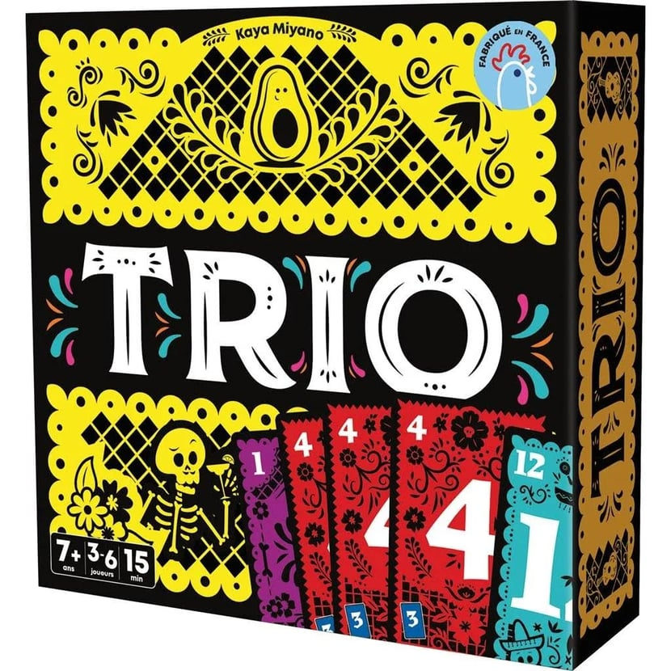
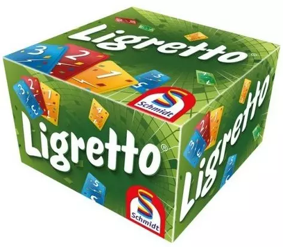

| Maiwenn Lucas | Accueil | ||
|---|---|---|---|
pour me détendre et changer des écrans, j'aime aussi les jeux de société, les book nook et puzzles pour des activités manuelles sympas
mes jeux préferes sont par exemple trio, présage, jungo, ligretto, et plein d'autres.

